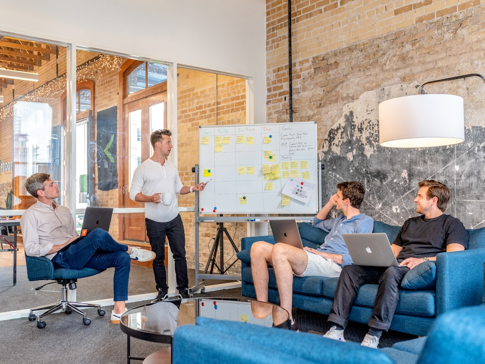

Human Resources Consulting
Support for talent strategy, leadership development, performance management, employee engagement, and organizational change.
Unlock Potential Services blends human resources expertise, coaching, DISC Flow assessment work, and process improvement to help individuals and organizations move forward with clarity, confidence, and measurable momentum.
At Unlock Potential Services, the focus is simple: help people thrive so organizations can thrive with them. The work brings together strategic HR thinking, leadership development, performance support, and coaching that honors the full person behind the role.
What sets the practice apart is its holistic approach. Coaching is not treated as separate from business results. Instead, coaching, HR expertise, DISC Flow facilitation, and Lean Six Sigma principles are combined to improve communication, strengthen leadership, streamline processes, and create sustainable outcomes.
Whether the need is organizational consulting or one-on-one development, every engagement is designed to create clarity first, then traction.
Support for talent strategy, leadership development, performance management, employee engagement, and organizational change.
Focused coaching for professionals ready to lead with more confidence, navigate transitions, and communicate with intention.
Behavioral insight and Lean Six Sigma thinking used to strengthen collaboration, sharpen workflows, and support lasting change.
Start with a conversation about your goals, your current challenge, and the kind of support that would make the biggest difference.

Clients often come during seasons of transition: stepping into leadership, changing roles, reworking team dynamics, balancing growth with personal wellbeing, or preparing for a major organizational shift.
Begin with a conversation to understand goals, current obstacles, and the kind of change you want to create.
Use reflection, DISC Flow insights, and business context to uncover the patterns shaping results.
Translate insight into focused priorities, a clear direction, and actions that fit real life and real work.
Build momentum through accountability, better communication, and measurable progress over time.